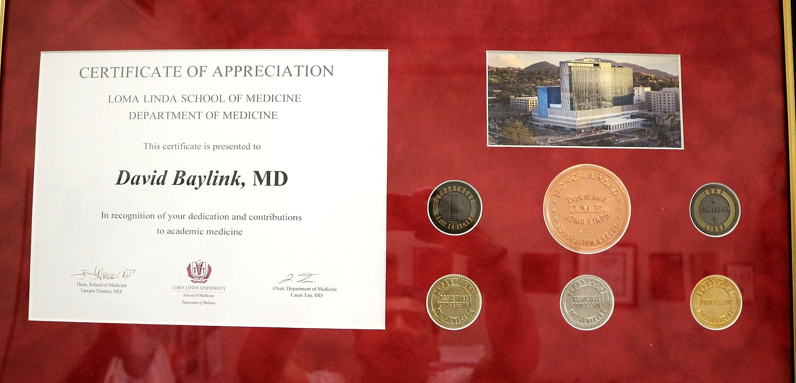
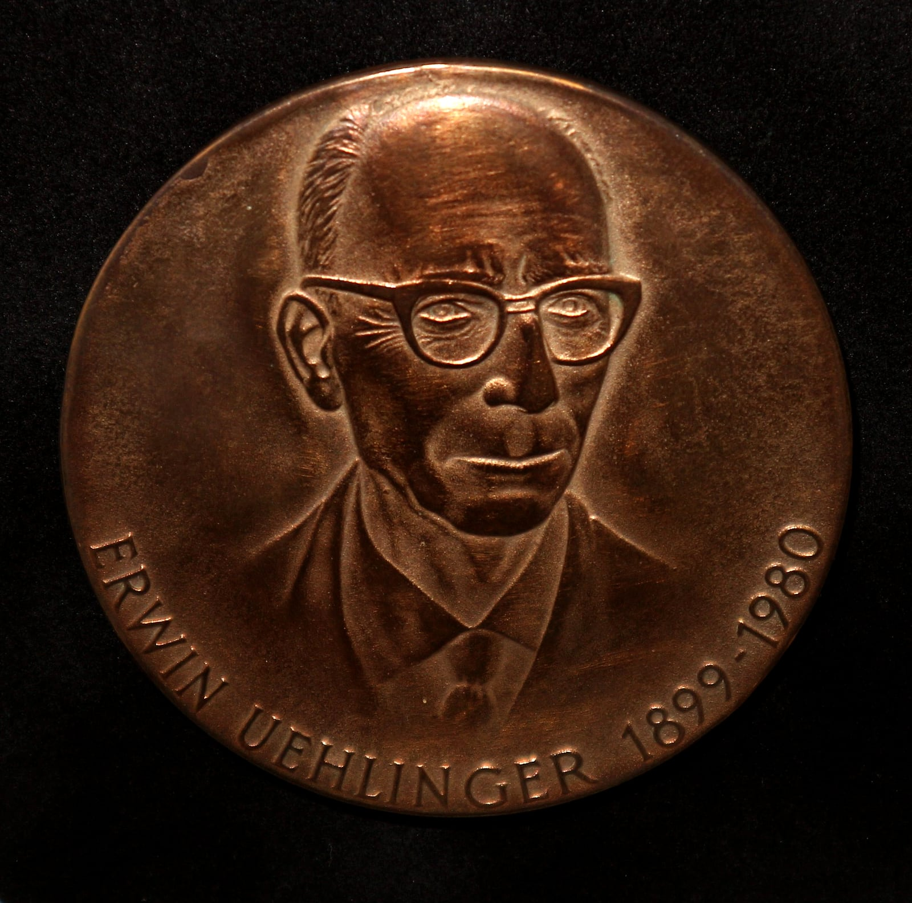
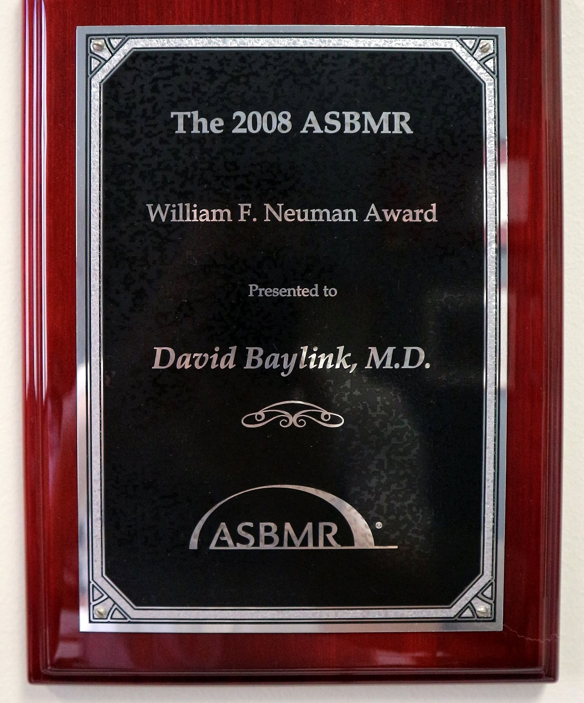
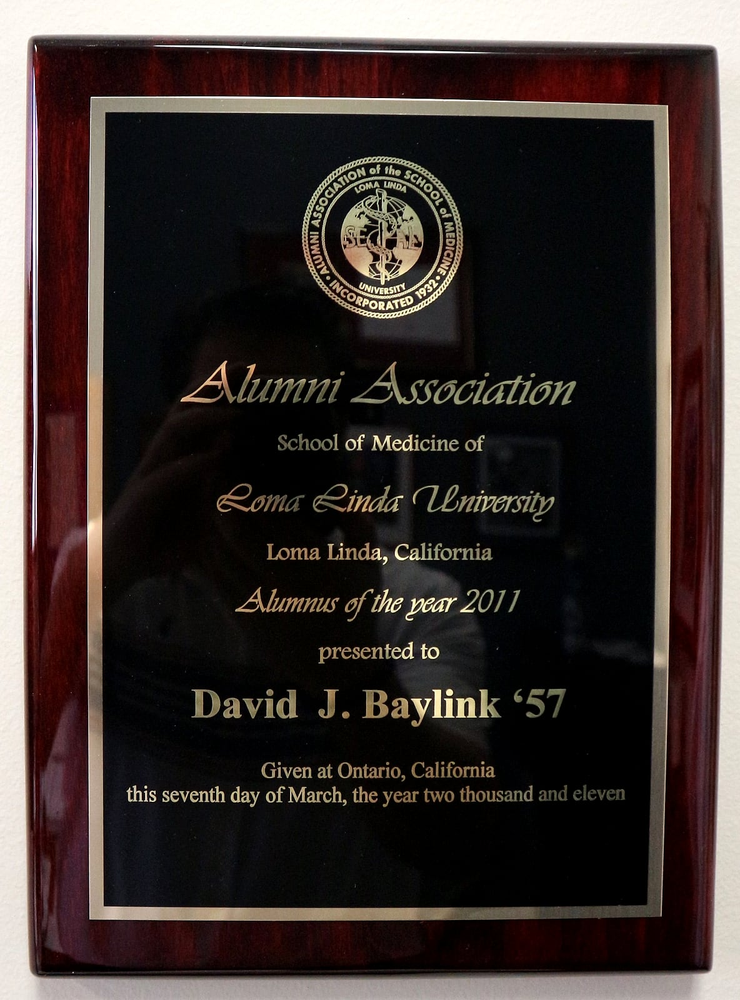
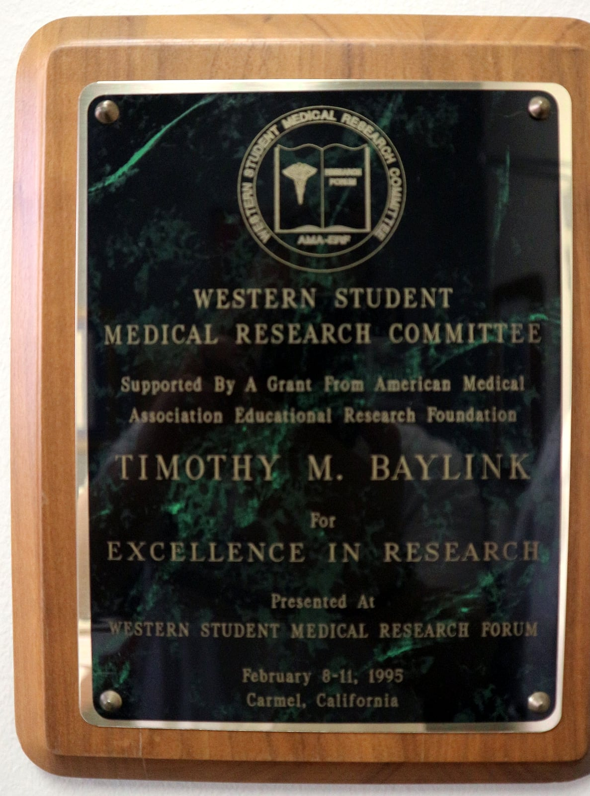
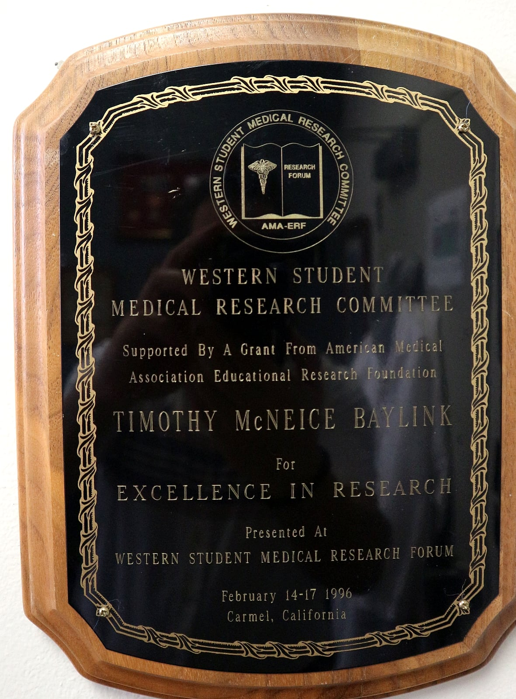

Honors
Awards & Achievements
More than sixty years at the bench and the bedside, recorded the old-fashioned way — in bronze, brass, and walnut. A selection of the plaques, medals, and certificates on his walls.


Certificate of Appreciation
School of Medicine, Department of Medicine — in recognition of his dedication and contributions to academic medicine.


Erwin Uehlinger Medal
Bearing the likeness of the Swiss bone pathologist Erwin Uehlinger (1899–1980).


William F. Neuman Award
American Society for Bone and Mineral Research


Alumnus of the Year
Alumni Association, Loma Linda University School of Medicine


Excellence in Research
Western Student Medical Research Forum · awarded to Timothy M. Baylink


Excellence in Research
Western Student Medical Research Forum · awarded to Timothy McNeice Baylink
Select any photograph to view it larger.
Curiosity, combined with rigor and tenacity, leads to something valuable to humanity.The plaque on his office wall